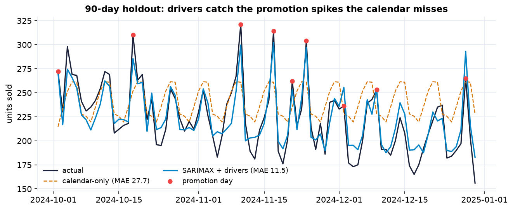
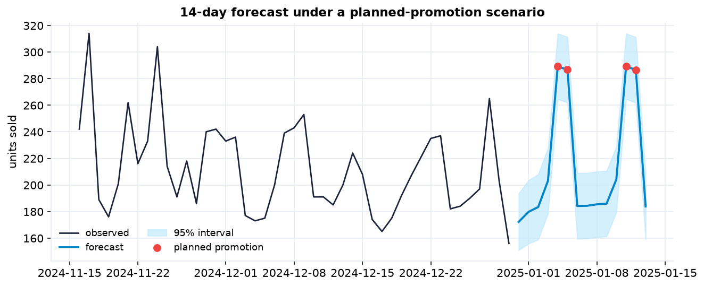

Classic forecasting models, ARIMA and its seasonal cousins, predict tomorrow purely from the history of the series itself. That is powerful, but it is blind to information you often have in hand: a promotion you have scheduled, a heat wave in the forecast, a public holiday next week. SARIMAX, ARIMA plus eXogenous drivers, lets the model use that outside information. It is also called regression with ARIMA errors, and it turns a forecast into something you can plan against.
It extends the time-series toolkit of Parts XXII–XXIII with external drivers: a proper temporal train/test split, a seasonal-naive baseline, a SARIMAX model whose driver coefficients are read like a regression, residual diagnostics, and the honest reality that forecasting forward means forecasting the drivers too.
The Forecasting Problem, and the Data (Steps 1–2)
A store needs a daily forecast of units sold, to stock shelves and plan staffing. We have two years of daily data, 730 days averaging about 238 units, along with the drivers the business knows or plans: the day's temperature, whether the product was on promotion, and whether it was a holiday. The goal is a forecast that uses those drivers, not just the calendar.
One row per day (no gaps): units_sold (the target), temperature_c,
on_promotion (0/1), is_holiday (0/1), and day_of_week. Ninety-five promotion
days and twenty-four holidays over the two years.
The Rhythms, and the Shocks (Step 3)
Three patterns stand out, and each points to a driver. A smooth yearly swing (demand rises with temperature, correlation about 0.55), a strong weekly rhythm (weekends far higher), and sharp upward spikes on promotion days. A pure ARIMA can learn the first two from the shape of the series. But the promotion spikes are effectively random from the series' own point of view, the only way to anticipate them is to feed the model the promotion calendar.
Two Models: With and Without the Drivers (Steps 4–8)
A temporal split, and a tough baseline
For time series you never shuffle: we train on the first ~640 days and hold out the final 90 days. The seasonal-naive baseline, repeat the value from the same weekday a week ago, is genuinely hard to beat on weekly data; it is off by about 23 units a day.
Calendar-only, then calendar plus drivers
A first SARIMAX knows the weekly rhythm (day-of-week terms) and a day-to-day carryover (an AR(1) term), but not the business drivers. It scores about 28, a touch worse than naive, because it cannot see the weather warming or a promotion coming. Add the three drivers and the error collapses to about 11.5 units (MAPE near 5%), cutting the daily error roughly in half versus the baseline. Same machinery, same horizon; the only change is the information the model can see.

The calendar-only forecast (amber) tracks the weekly wiggle but sails past every promotion spike; the driver model (blue) rides on top of the actual line, because it was told when the promotions happen.
Reading the Drivers (Steps 9–10)
Because SARIMAX is a regression, its driver coefficients are directly interpretable, with confidence intervals. Each degree Celsius warmer adds about 2.7 units; a promotion adds about 59 units a day; a holiday about 32. All three are overwhelmingly significant and their intervals are tight. A pure ARIMA gives you a forecast; SARIMAX gives you a forecast and a quantified reason for it.
The residual diagnostics are clean, no trend, no seasonal ripple, tiny autocorrelation, and the AIC drops sharply versus the calendar-only model. In full honesty, with 640 observations the Ljung-Box test is powerful enough to flag a whisp of leftover autocorrelation (p near 0.001); it is practically negligible, but a production model might add a second AR lag to tidy it up. Diagnostics matter even when the forecast is already good.
Forecasting Forward, and the Memo (Steps 11–12)
Here is the crucial difference from a pure ARIMA. To forecast tomorrow, SARIMAX needs tomorrow's driver values. Two of ours are known in advance, the promotion schedule and the holiday calendar are things the business plans, but temperature must itself be forecast. So we build a future scenario: planned promotions and holidays, plus a temperature outlook. Uncertainty in the weather becomes uncertainty in the demand, which the prediction interval reflects.

A 14-day forecast under a planned-promotion scenario. The planned promotion days show up as clear bumps, the model turns a marketing plan into a demand number operations can stock against; the shaded band is the 95% interval.
Memo to the operations team
We built a daily demand forecast that uses the information you already plan around, the promotion schedule, the holiday calendar, and the weather outlook, on top of the normal weekly rhythm. On the most recent three months it predicted demand to within about 5% on an average day, roughly half the error of a model that ignores those drivers.
What the drivers are worth
A promotion adds about 59 units a day, a holiday about 32, and each degree of warmth about 2.7, all measured with tight confidence intervals.
The catch
To forecast ahead we must supply the future drivers, so a promotion plan and a weather outlook are inputs, not outputs. The forecast is only as reliable as those assumptions, and the interval widens when the weather is uncertain.
Recommendation
Use it for stocking and staffing, and refresh it whenever the promotion plan changes.
Run the whole forecast in Python
The companion notebook is the full 12-step SARIMAX workflow: it explores the weekly and yearly rhythms, makes a temporal train/test split, sets a seasonal-naive baseline, fits a calendar-only model and then a model with the three drivers, compares them on a 90-day holdout, reads the driver coefficients with confidence intervals, checks the residual diagnostics, and builds a forward forecast under a planned-promotion scenario, all library-first with statsmodels.
View opens the rendered notebook instantly.
Open in Colab runs it live. To run locally, install numpy, pandas,
matplotlib, statsmodels, and openpyxl.
🎓 Key Takeaways
- ✓Drivers beat the past alone: SARIMAX cut the daily error roughly in half (MAE 23 → 11.5) by using promotions, weather, and holidays.
- ✓The calendar is not enough: a model that knew only the weekly rhythm barely matched the naive baseline, it could not see the spikes.
- ✓Split by time, never shuffle: a temporal holdout is the only honest test of forecasting into the unknown.
- ✓Coefficients are the payoff: a promotion is worth about +59 units, a holiday +32, each degree +2.7, a forecast and its reasons.
- ✓You must forecast the drivers too: planned drivers are pure gain; predicted ones (weather) import their own uncertainty into the interval.
Take It Further
Five ways to stress-test and extend the forecast in the companion notebook:
Search for the ARIMA order
Fit a grid of (p,d,q) orders and let AIC pick the error model, then compare to the holdout score.
The cost of an imperfect weather forecast
Re-score the holdout using a seasonal-normal temperature instead of the true one, and measure the penalty.
Plan a promotion calendar
Compare two future promotion schedules and read off the total forecast demand for each.
on_promotion patterns; watch for the missing interaction.Do the prediction intervals hold up?
Check the empirical coverage of the 95% interval on the held-out days.
get_forecast(...).conf_int(), count how many actuals fall inside.Rolling-origin cross-validation
Slide the cutoff forward over several origins and confirm the drivers win at each, not just once.
All five, worked in a companion notebook
A second notebook, Take It Further, rebuilds the Chapter 140 forecast and works every extension with visuals and explanations: an AIC order search, the weather-forecast penalty, a promotion-calendar planner, a prediction-interval coverage check, and rolling-origin cross-validation.
Quiz: Test Yourself
Eight questions on driver-based forecasting, from the temporal split to the future-driver catch. Answer them, hit Check Answers, and keep refining until you score 100%. Your progress is saved.
We forecast one clean daily series. Next we wrangle many messy files into one. Chapter 141 · Case Study: Multi-File, Multi-Date EDA joins several sources and untangles real-world dates and duplicates before any analysis begins.